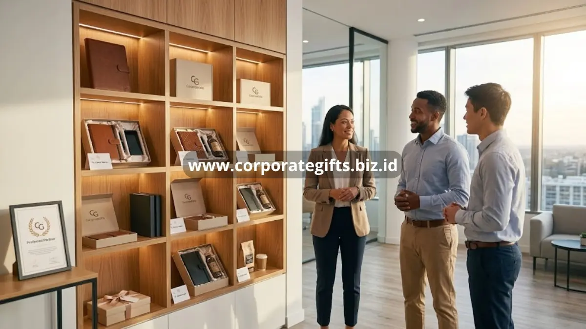

Poin Penting:
- Client appreciation gifts terbukti meningkatkan tingkat retensi klien pada perusahaan dengan program gifting terstruktur.
- Hadiah yang bermakna memperkuat ingatan klien terhadap brand perusahaan dalam jangka panjang.
- Klien yang merasa dihargai lebih terbuka memberikan referral kepada mitra bisnis lain.
- Program apresiasi klien yang konsisten memperkuat citra perusahaan sebagai mitra bisnis yang profesional.
- CorporateGifts membantu perusahaan merancang program apresiasi klien yang berdampak nyata.
Manfaat client appreciation gifts bagi perusahaan mencakup peningkatan loyalitas klien, penguatan reputasi brand, serta potensi pertumbuhan bisnis melalui referral. Ketika diterapkan secara konsisten, program apresiasi klien tidak hanya menjaga hubungan yang sudah ada, tetapi juga membuka peluang bisnis baru melalui rekomendasi klien yang merasa dihargai. Artikel ini mengulas berbagai manfaat client appreciation gifts secara lebih mendalam.
Apa Manfaat Utama Client Appreciation Gifts bagi Perusahaan?
Manfaat utama client appreciation gifts bagi perusahaan adalah memperkuat hubungan emosional dengan klien, yang pada akhirnya berkontribusi pada retensi bisnis jangka panjang. Studi yang dipublikasikan The Sweet Tooth pada awal 2026 mencatat bahwa perusahaan dengan program gifting terstruktur mengalami tingkat retensi klien sekitar 23 persen lebih tinggi dibandingkan perusahaan tanpa program serupa, sekaligus melaporkan pertumbuhan pendapatan yang lebih cepat pada periode yang sama.
Selain retensi, client appreciation gifts juga berperan dalam memperkuat brand recall, yaitu kemampuan klien mengingat perusahaan pemberi hadiah dalam jangka waktu lama. Berdasarkan laporan yang sama, penerima hadiah cenderung mengingat perusahaan pemberi jauh lebih lama dibandingkan klien yang hanya terpapar strategi pemasaran konvensional tanpa unsur gifting.
Bagaimana Client Appreciation Gifts Meningkatkan Retensi Klien?
Client appreciation gifts meningkatkan retensi klien dengan menciptakan pengalaman positif yang memperkuat keputusan klien untuk tetap menjalin kerja sama. Riset Harvard Business Review yang dikutip Small Packages pada 2025 menemukan bahwa sekitar 68 persen klien meninggalkan sebuah bisnis karena merasa tidak dihargai, jauh melampaui alasan terkait harga atau kualitas layanan semata. Temuan ini menegaskan bahwa faktor apresiasi memiliki peran signifikan terhadap keputusan klien untuk bertahan.

Program client appreciation gifts yang dirancang dengan baik membantu perusahaan menunjukkan bahwa hubungan bisnis tidak hanya dipandang dari sisi transaksional, melainkan juga dari sisi relasional. Pendekatan ini secara langsung mengurangi risiko klien beralih ke kompetitor yang menawarkan penghargaan serupa.
Bagaimana Client Appreciation Gifts Mendorong Referral Bisnis?
Client appreciation gifts mendorong referral bisnis karena klien yang merasa dihargai cenderung lebih terbuka merekomendasikan perusahaan kepada mitra atau kolega bisnis mereka. Studi industri yang dirangkum The Sweet Tooth pada 2026 mencatat bahwa mayoritas penerima hadiah korporat memberikan referral bisnis dalam kurun waktu enam bulan setelah menerima hadiah, menjadikan gifting sebagai salah satu strategi pertumbuhan bisnis yang efisien.
Referral yang dihasilkan dari program client appreciation gifts umumnya memiliki kualitas lebih tinggi dibandingkan prospek dari kanal pemasaran konvensional, karena rekomendasi tersebut datang dari pengalaman langsung klien yang sudah merasakan kualitas hubungan bisnis dengan perusahaan pemberi hadiah.
Apakah Client Appreciation Gifts Berdampak pada Reputasi Perusahaan?
Client appreciation gifts berdampak positif pada reputasi perusahaan karena mencerminkan bagaimana perusahaan memperlakukan mitra bisnisnya, yang pada akhirnya membentuk persepsi publik terhadap profesionalisme dan kepedulian perusahaan. Laporan industri gifting korporat dari Sendoso pada 2026 mencatat bahwa sekitar 66 persen perusahaan menggunakan program gifting untuk memperkuat hubungan dengan klien maupun karyawan, menandakan bahwa gifting telah menjadi bagian dari strategi reputasi bisnis arus utama, bukan sekadar pelengkap tahunan.
Reputasi yang terbangun melalui program client appreciation gifts yang konsisten juga membantu perusahaan menonjol di tengah persaingan bisnis, terutama pada industri dengan tingkat kompetisi tinggi di mana kualitas produk atau layanan cenderung setara antar kompetitor.
Manfaat client appreciation gifts bagi perusahaan tidak berhenti pada kesan baik sesaat, melainkan berdampak nyata pada retensi klien, pertumbuhan referral bisnis, hingga penguatan reputasi jangka panjang. Perusahaan yang ingin merasakan manfaat tersebut secara maksimal memerlukan program apresiasi klien yang dirancang secara strategis dan konsisten.
CorporateGifts siap membantu perusahaan Anda merancang dan mewujudkan program client appreciation gifts yang berdampak nyata bagi hubungan bisnis. Hubungi CorporateGifts sekarang untuk memulai program apresiasi klien perusahaan Anda.
FAQ
1. Apa manfaat utama client appreciation gifts bagi perusahaan?
Manfaat utamanya adalah memperkuat hubungan emosional dengan klien, yang pada akhirnya berkontribusi pada retensi bisnis jangka panjang dan brand recall.
2. Bagaimana hadiah klien meningkatkan retensi klien?
Hadiah menunjukkan bahwa hubungan bisnis tidak hanya transaksional, mengurangi risiko klien beralih ke kompetitor dengan menciptakan pengalaman positif dan apresiasi yang nyata.
3. Mengapa program gifting bisa mendorong referral bisnis?
Klien yang merasa dihargai cenderung lebih terbuka dan puas, sehingga lebih mungkin merekomendasikan perusahaan kepada kolega atau mitra bisnis mereka secara organik.
4. Apakah apresiasi klien benar-benar memengaruhi reputasi brand?
Ya, cara Anda memperlakukan mitra bisnis mencerminkan profesionalisme perusahaan. Program apresiasi memperkuat citra perusahaan sebagai pihak yang peduli dan terpercaya.
5. Bagaimana CorporateGifts dapat membantu perusahaan saya?
CorporateGifts membantu dalam merancang, memilih, dan mengeksekusi program apresiasi klien yang strategis, konsisten, dan berdampak nyata bagi pertumbuhan bisnis.
Butuh rekomendasi cepat untuk corporate gift?
Chat tim Pusat Souvenir & Merchandise Kantor untuk kurasi pilihan sesuai budget & kebutuhan brand Anda.